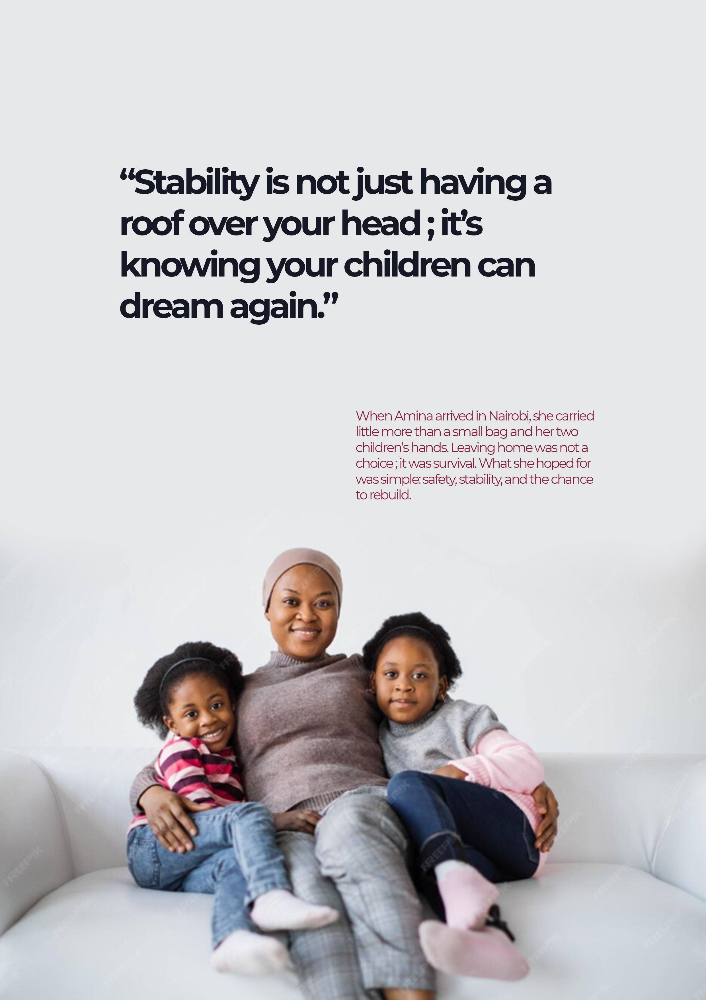
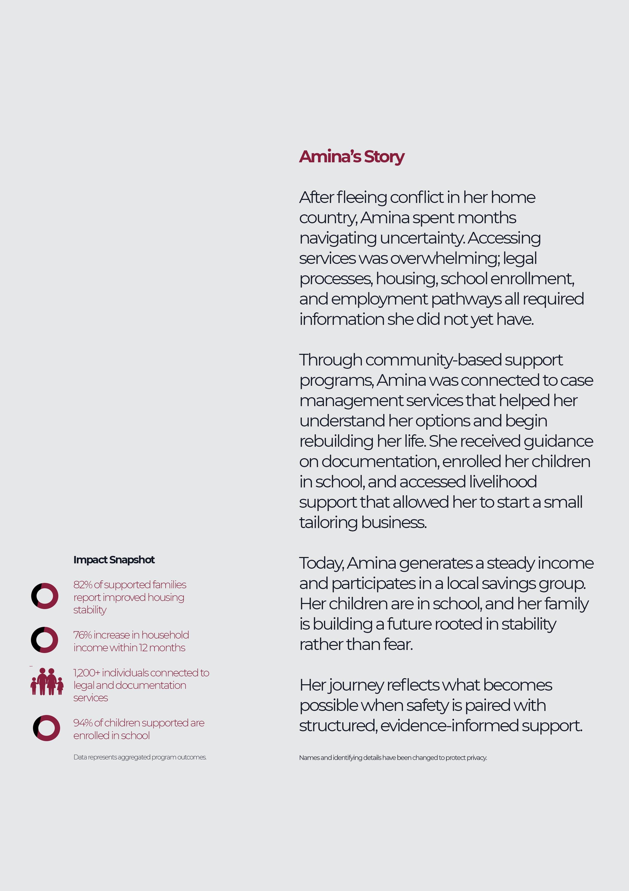

Impact Snapshot Visual Storytelling
Project Snapshot
This project turned dense information into a visually engaging story. The objective was to make the content easier to understand while keeping the layout polished and persuasive.
Overview
This project was focused on storytelling the organisation's Impact Snapshot to effectively communicate their impact to stakeholders.



Outcome
The result was a transformation of complex data into a relatable story that effectively conveys the necessary information.
Need a similar design? Get a quote.